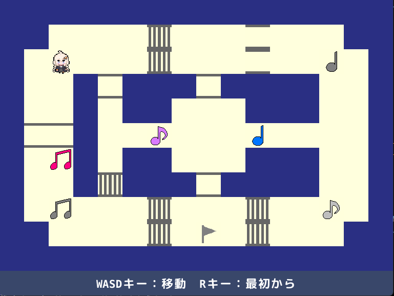
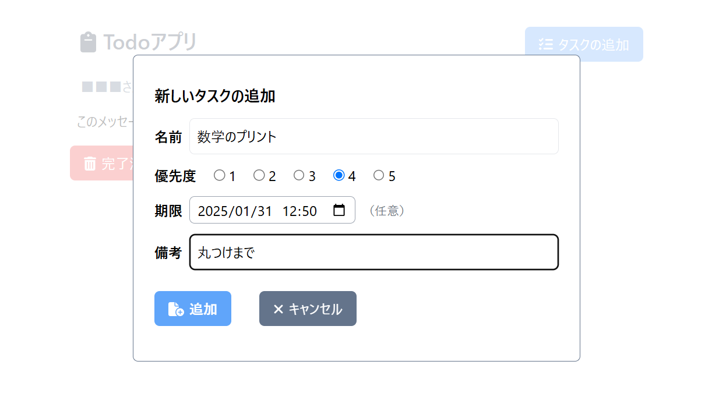
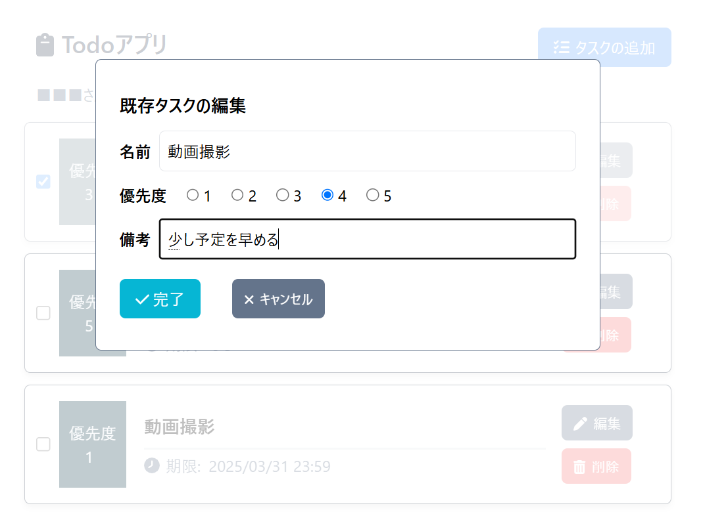
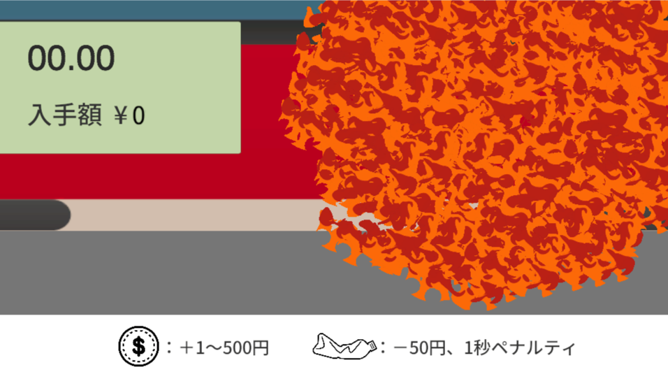

Pythonを使用して、Discord で暇つぶしが出来る bot を作成しました。
現在、ルーレットやブラックジャックによるギャンブル、人狼ゲームが実装されています！
便利機能として、チップを管理できるバンク機能、デイリー報酬機能、他人にチップを渡す／他人からチップを奪う機能などが実装されています。
こだわりポイントとして、各人がバラバラに実行すると自分の手札がどれか分からなくなるという意見があったため、
ブラックジャックに複数人同時に遊ぶモードを実装しました。
管理するべき要素が非常に多く、とても実装が難しかったです...！
また、bot の更新時にチップが無くなってしまうという不具合が発生してしまったのですが、
Dropbox にチップを保存するシステムを実装することで解決しました。
TOKEN の取得が難しくかなり苦戦しましたが、生成AIを活用して実装することが出来ました！
1サーバーでしか使用することを想定していないので現状は問題ありませんが、
インターネット上に公開して様々なサーバーでも動作させるには、保存処理を改善する必要がありそうです。
制作期間:
1ヶ月（5月上旬～5月末）
開発:
Python、Discord.py、Dropbox、Github Copilot、chatGPT
C++のみを用いて、マインスイーパーを作成しました。
プールアロケーターを用いて、メモリの確保を行っており、動作の高速化を図っています。
14 Minesweeper Variants という特殊ルール付きのマインスイーパーが好きなので、二つルールを再現してみました。
本家様のように特殊ルールを巧みに使った手筋などはありませんが、ルールが作れただけでも良かったです。
工夫点として、理不尽なゲームオーバーを避けるために、最初は確定でマスが開けられるように設定しています。
また、数字や旗に色を付けることで、ターミナル上での見やすさにこだわりました。
操作感を向上させるため、キーボードで操作できるようになっています。
他にも、再描画の際にターミナルがチラつかないような工夫もしています。
ゲームエンジンを使わずに制作する本格的なゲームはこれが初めてだったので、良い経験になりました！
制作期間:
3日（2025年8月下旬）
開発:
C++
制作したゲームのコード/プレイは
こちらから
2025年4月に開催された、Unity 1-Week GAME
JAM（お題「あい」）の参加作品です。
アイスクリームの足場を乗り継いでゴールを目指す、１画面アクションゲームです。
アイスの足場は時間経過で溶けて消えてしまうため、焦らずに対処することが攻略の鍵となっています！
今回も友人と参加しました！ゆきねこ｡は主にプレイヤー関連の処理、床の処理、チュートリアル以外のステージ制作を担当です。
制作期間:
1週間（2025年4月14日0時～2025年4月21日0時）
開発: Unity
制作したゲームのプレイは
こちらから
音符をスイッチまで運び、ギミックを動かしてゴールへ向かう見下ろし型視点の2Dパズルゲーム！
ステージはチュートリアルステージを除き、現在は５ステージのみとなっています。
前半ステージは遊びやすい難易度になっていますが、ステージを進むごとに難易度が上昇していきます！

1つのステージを設計するために必要な時間は、テストプレイも含めても1時間ほどで済むのですが、
最終ステージ（上の画像）の設計には4時間ほどかかりました...
難しさを確保しつつ、パズルゲームの面白さを損なわない設計が、いかに難しいかを身をもって思い知らされました。
しかし、ステージの設計は非常に新鮮で、とても面白かったです！
制作期間:
約2週間（2023年12月下旬～2024年1月上旬）
開発: pygame
音をつたえるあかりちゃんのプレイ/コードは
こちらから
React、TypeScript、Tailwind CSSを用いて、TodoAppを作成しました。
タスクの追加/編集/削除に加え、ローカルストレージでデータを永続化しています。
モーダルウィンドウを用いることで簡潔なデザインにまとめ、分かりやすいデザインになるように心掛けました。

また、ユーザーが自由にメモできるような備考欄も実装しました。
記入は任意ですが、タスクの内容を詳しく記入することで、タスクの内容を忘れにくくなると思います。

今回開発に用いたReact、TypeScriptは初めて使用したので非常に苦しかったですが、形になって良かったです！
時間がかかった要素は、編集機能の実装です。想定していたよりも遥かに難しくて大変でした...
制作期間:
約1ヶ月（2024年10月末～2024年11月末）
開発: React、TypeScript
TodoAppの使用は
こちらから
、コードは
こちらから
敵を倒し、戦い抜け───
高専祭用に、チームで殲滅サバイブというゲームを制作しました！
敵を倒して5分間生き残る、シンプルなルールのサバイバルゲームです。
敵を倒すとプレイヤーの武器とステータスが上昇するアイテムがドロップすることがあります。
アイテムを拾って自分を強化し、敵の猛攻から生き残れ！
ゆきねこ｡は、ステージ作成、UIデザイン、難易度などのゲームバランスの微調整やデバックなどを担当しました。
計画: 約2週間 制作:
約1ヶ月半 不具合修正等: 数時間 合計: 約2ヶ月
開発: Unity
殲滅サバイブのプレイは
こちらから
本アプリは TypeScript、Next.js、prisma を用いたブログアプリです。
記事の新規作成/編集/削除の基本的な機能を実装し、シンプルなデザインのアプリに仕上げました。
また、ログイン機能を実装し、ログインしたユーザーのみが記事の作成等を行えるようになっています。
悪用等防止のため、ログインに必要な情報の公開は行いません。あらかじめご了承くださいますようお願い申し上げます
また、検索機能と並びかえの機能を実装し、記事の数が増えた場合でも、ユーザーが記事を探しやすくなるようにしました。
制作期間:
約3ヶ月（2024年11月中旬～2025年2月下旬）
開発:
TypeScript、Next.js、prisma、Supabase、Vercel
ブログアプリは
こちらから
、コードは
こちらから
2024年年末に開催された、Unity 1-Week GAME
JAM（お題「ない」）の参加作品です。
タイトルの通り、お金がないので集めるゲームです。集める場所は自販機下！
お金とゴミが左右から流れてくるので、お金をクリックしてお金を集めましょう！
ゴミをクリックしてしまうと、集めたお金が減ってしまいます...
1分間で2,000円を貯めて、財布を爆発させることが出来ればクリアです！

友人と2人で参加しました！ゆきねこ｡は主にコーディングを担当です。
初参加ということもあってかなり緊張しましたが、何とか期間内に形になって良かったです。
毎日12時間以上制作に費やすというかなりのハードワークではありましたが、楽しく開発できました！
今回のGAME JAMに参加したことで、ゲームの制作意欲も刺激されたので、
この勢いで沢山ゲームを作っていこうと思います！
制作期間:
1週間（2024年12月23日0時～2024年12月29日20時）
開発: Unity
制作したゲームのプレイは
こちらから
高専祭用に、チームでシューティングゲームを制作しました！
コントローラーはJoyconを使用して、班員に銃型のものを作成してもらいました！
ジャイロセンサーを活用して照準を操作する形になっています。
リロード機能なども実装されていて、段ボール製とは思えないほどの品質です！（すごい）
ゆきねこ｡は、敵キャラのデザイン、作画を担当しました。
基本的には、デザイン班として活動しましたが、少しだけプログラム班の相談にのりました。
この子は、また別の班員に動かしてもらいました。また、別で武器も作成してもらいました。
実際に動いている所を見ると、とっても嬉しいです！それに楽しい！
制作期間:
約1ヶ月（2024年10月上旬～2024年11月上旬）
開発: Unity
Google Colab.を使用し、じゃんけんのシミュレーターを作成しました！
じゃんけんシミュレーターと言いつつ、時間が余ったのであっち向いてホイも実装しました。
制作: 約8時間 不具合修正:
約2時間 合計: 約10時間
開発: Google Colab.
じゃんけんシミュレーターのプレイは
こちらから